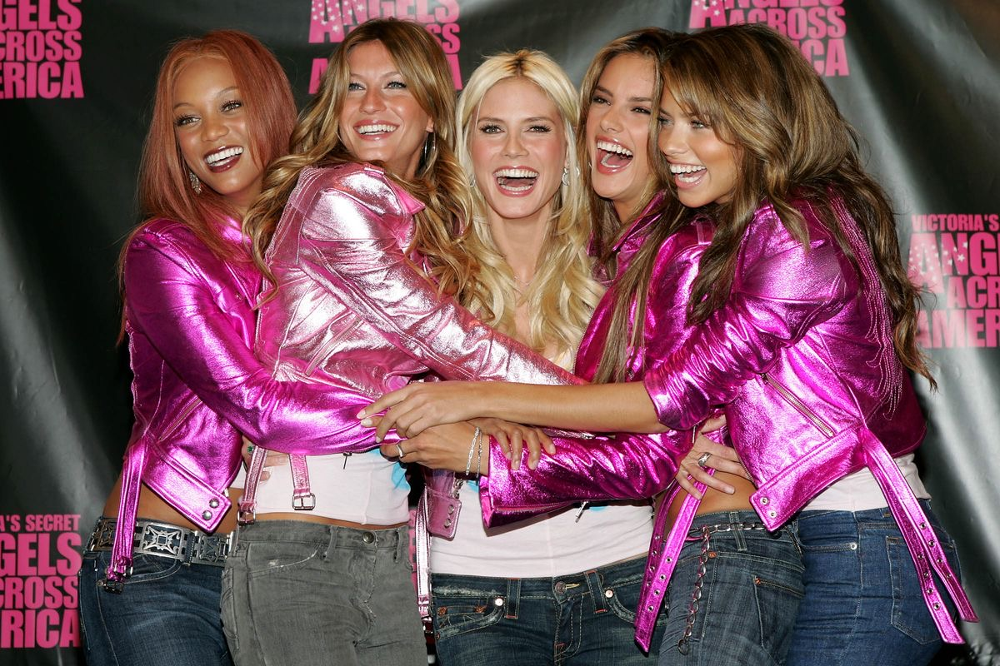

Por trás do universo da Victoria’s Secret
"Por trás da Victoria’s Secret existem histórias, detalhes e curiosidades que tornam a marca ainda mais fascinante.”
"Beleza, confiança e estilo"
"Por trás da Victoria’s Secret existem histórias, detalhes e curiosidades que tornam a marca ainda mais fascinante.”

A marca foi fundada com a ideia de criar uma experiência mais confortável e sofisticada para a compra de lingerie.
O Victoria’s Secret Fashion Show ficou conhecido mundialmente por suas grandes produções, modelos, músicas e pelas famosas asas
As Victoria’s Secret Angels se tornaram uma das imagens mais marcantes da marca, ajudando a construir sua identidade no mundo da moda.